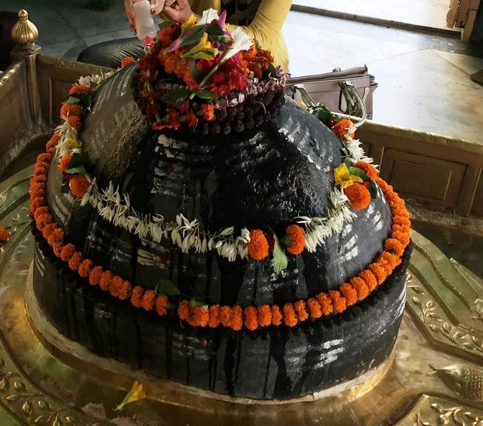

<?xml version="1.0" encoding="UTF-8"?><rss version="2.0"
	xmlns:content="http://purl.org/rss/1.0/modules/content/"
	xmlns:wfw="http://wellformedweb.org/CommentAPI/"
	xmlns:dc="http://purl.org/dc/elements/1.1/"
	xmlns:atom="http://www.w3.org/2005/Atom"
	xmlns:sy="http://purl.org/rss/1.0/modules/syndication/"
	xmlns:slash="http://purl.org/rss/1.0/modules/slash/"
	>

<channel>
	<title>Krithi Vaseshwar &#8211; Varanasi Temples</title>
	<atom:link href="index.html" rel="self" type="application/rss+xml" />
	<link>../../../../../index.html</link>
	<description>Temples of Varanasi as referred to in Kashi Khand</description>
	<lastBuildDate>Thu, 19 Jun 2025 05:16:46 +0000</lastBuildDate>
	<language>en-US</language>
	<sy:updatePeriod>hourly</sy:updatePeriod>
	<sy:updateFrequency>1</sy:updateFrequency>
	<generator>https://wordpress.org/?v=4.6.29</generator>
	<item>
		<title>KRITHI VASESHWAR</title>
		<link>../../../../../shiva-temples/krithi-vaseshwar/index.html</link>
		<pubDate>Sun, 09 May 2010 03:01:51 +0000</pubDate>
		<dc:creator><![CDATA[admin]]></dc:creator>
				<category><![CDATA[Krithi Vaseshwar]]></category>
		<category><![CDATA[Main Shiva Temples]]></category>
		<category><![CDATA[Shiva Temples]]></category>
		<category><![CDATA[kri]]></category>
		<category><![CDATA[krit]]></category>
		<category><![CDATA[krithi]]></category>
		<category><![CDATA[krithi vaseshwar]]></category>
		<category><![CDATA[kriti]]></category>
		<category><![CDATA[lat bhairav]]></category>
		<category><![CDATA[mosque]]></category>
		<category><![CDATA[vishweshwar]]></category>
		<category><![CDATA[wish]]></category>

		<guid isPermaLink="false">../../../../../p=212.html</guid>
		<description><![CDATA[&#160; Lord Shiva was describing the fame of Ratneshwar to Goddess Parvaty and precisely at that time Mahishasur’s son Gajasur was aggressively beating up and killing various Shiv Gans (attendants / servitors).  Wherever his steps touched the ground there were earthquake like tremors.  His gigantic hands uprooted all the trees and his forceful exhalation of [&#8230;]]]></description>
				<content:encoded><![CDATA[<p>&nbsp;</p>
<p>Lord Shiva was describing the fame of Ratneshwar to Goddess Parvaty and precisely at that time Mahishasur’s son Gajasur was aggressively beating up and killing various Shiv Gans (attendants / servitors).  Wherever his steps touched the ground there were earthquake like tremors.  His gigantic hands uprooted all the trees and his forceful exhalation of breath caused huge tidal waves in the ocean.</p>
<p>Left alone, Gajasur would have created havoc in the world and Lord Shiva did not want any sort of disturbance in the Punya Kshetra : Kashi.  When Gajasur approached him in a speed, Lord Shiva pierced him with his Trishul and lifted him high in the sky.  Before dying Gajasur told Lord Shiva that he was extremely happy that he faced death at the hands of Lord Shiva and this was indeed a bliss in disguise for him.  All living beings have to  die one day or the other and he prayed that such kind of death should be a boon to all.  He also wished that, after his death, his skin should adorn Lord Shiva for ever and he (Gajasur) would have the satisfaction of being in constant touch of Lord Shiva.</p>
<p>Lord Shiva agreed accordingly. He further stated that Gajasur had attained his death in the Avimukta Kshetra called Kashi and his body will attain the form of a huge Shiv Ling precisely at that place. This Ling will be called Kriti Vaseshwar.  Krithi Vaseshwar will be a huge/enormous ling, much bigger than any of the Shiv Lings in Kashi. For the benefit of mankind, Lord Shiva stated that he and his family will always remain in Krithi Vaseshwar Ling.</p>
<p></p>
<p style="text-align: center;"><strong>(KRITHI VASESHWAR)</strong></p>
<p>All sins committed in previous births and present births are washed away by performing various poojas and good/righteous actions. But a mere darshan of Krithi Vaseshwar would cleanse the devotee of all his sins.  Whatever benefit is derived by reciting seven crore Rudra Jap, will be attained simply by one Rudra Jap (japam) in front of Krithi Vaseshwar. (Kashi Khand, Chapter sixty eight).  Jap or Japam is repeated recitation of a mantra or shloka.</p>
<p>According to Brahma Vaivart Puran, Krithi Vaseshwar makes the life of Kashi Vasis (residents of Kashi who have adopted divine life) fruitful and gives Moksha to devotees who pray at this temple.  According to Koormapuran, whether a devotee attains Moksha even after thousand births or not, with blessings of Krithi Vaseshwar, the devotee certainly attains moksha and is liberated.</p>
<p>Elsewhere in Kashi Khand, Goddess Parvaty desired to know about the Lingas which are worshipped in Kashi and which are capable of giving mukti.  Lord Shiva told Goddess Parvaty that there are crores of Lingas in Kashi (Kashi Khand,  Chapter 73) of which many are Swayambhu Lingas and many have been established by devotees after observing vedic rituals.</p>
<p>Of the above Lings, there are fourteen prominent Lingas and by merely uttering the names of such Lings, the devotee is absolved of all his sins.  Fourth among such Lings is Krithi Vaseshwar Ling.</p>
<p>&nbsp;</p>
<p><strong>&#8212;&#8212;&#8212;&#8212;&#8212;&#8212;&#8212;&#8212;&#8212;&#8212;&#8212;&#8212;&#8212;&#8212;&#8212;&#8212;&#8212;&#8212;&#8212;&#8212;&#8212;&#8212;&#8212;&#8212;&#8212;&#8212;&#8212;&#8212;&#8212;&#8212;&#8212;&#8212;&#8212;&#8212;-</strong></p>
<p><strong>Kashi Khand, Chapter 68, Shlok 43</strong></p>
<p><strong>सप्तकोटि महारुद्रै: सुजप्तैर्यत्फलं  भवेत् </strong></p>
<p><strong>तत्फलं लभ्यते काश्यां पूजनात्क्रित्तिवासास:</strong></p>
<p>&nbsp;</p>
<p><strong>Performing Pooja of Krithi Vaaseshwar in Kashi, will yield punya of reciting seven crore Maha Rudrams.</strong></p>
<p><strong>&#8212;&#8212;&#8212;&#8212;&#8212;&#8212;&#8212;&#8212;&#8212;&#8212;&#8212;&#8212;&#8212;&#8212;&#8212;&#8212;&#8212;&#8212;&#8212;&#8212;&#8212;&#8212;&#8212;&#8212;&#8212;&#8212;&#8212;&#8212;&#8212;&#8212;&#8212;&#8212;&#8212;&#8212;&#8212;</strong></p>
<p>&nbsp;</p>
<p>During medieval times, many Mughal rulers destroyed various temples.  Of the important temples of Kashi which were destroyed three were prominent, i.e. Vishweshwar Temple, Krithi Vaseshwar Temple and Bindu Madhav Temple (Vishnu).  Krithi Vaseshwar temple was situated to the north of Kal Bhairav temple and was destroyed by Aurangzeb. Near the temple was Hans Teerth. People were known to take bath in Hans (Swan) Teerth and pray at Krithi Vaseshwar temple.</p>
<p>After destruction of the temple, the reconstruction was undertaken by Raja Patnimal after a long gap and the present temple  was constructed at a place to the South of the ancient temple and worship is being done at this newly constructed temple now.</p>
<p>One important point needs to be mentioned here.  Original Krithi Vaseshwar was in a huge temple premises.  As mentioned in the foregoing paragraphs, a mosque was constructed after destruction of the temple and there was a fountain, precisely at the place where Krithi Vaseshwar Ling existed once.  For several centuries, devotees used to pray at the fountain on Shiv Ratri days, at the spot where the Ling stood once.  Several years back, one huge Ling had been installed again on that spot. It is learnt that the devotees are offering regular prayers at the above spot also.</p>
<p>Special importance is on all Chaturdasi days after Poornima (one day before Amavasya). A person undergoing Vratham on the above day and doing pooja at Krithi Vaseshwar temple attains highest level of happiness.  Kashi Khand lays special importance for pooja/archana during Magha month (Jan. 21 – Feb. 20), Chaturdasi day after Amavasya (fourteenth day) and Chaitra month (March – April) Poornima days. Performing pooja on such days will be highly beneficial for the devotees.</p>
<h1>LOCATION OF THE TEMPLE</h1>
<p>Krithi Vaseshwar temple is located at K-46/23, West of Har Tirath Pond, in Mrityunay Mahadev Road.  Hans Teerth as mentioned in ancient texts is now known as Har Tirath and many buildings have now come up where once the pond existed. The temple is approachable from a famous locality called Bishweshwarganj, which is a great mandi (market place) and travelling to the temple in cycle rickshaw is convenient.</p>
<p>&nbsp;</p>
<h3><strong>Please watch our YouTube Video about Krithi Vaseshwar at following Link</strong></h3>
<p>&nbsp;</p>
<p><a href="https://www.youtube.com/watch?v=OTFgs3keGHo&amp;t=24s">https://www.youtube.com/watch?v=OTFgs3keGHo&amp;t=24s</a></p>
<p>&nbsp;</p>
<p>&nbsp;</p>
<p><strong><span style="text-decoration: underline;">TYPES OF POOJAS</span></strong></p>
<p>The temple is open from 04.00 a.m. to 01.30 p.m. and from 05.00 p.m. to 10.00 p.m. Mangala Aarti is at 04.00 a.m., aarties are performed at 08.00 am, 12.00 noon, 08.00 p.m. and Shayan Aarti at 10.00 p.m.</p>
<p>For doing special pooja, it is advisable to consult the Poojari before hand.</p>
<h2></h2>
]]></content:encoded>
			</item>
	</channel>
</rss>
